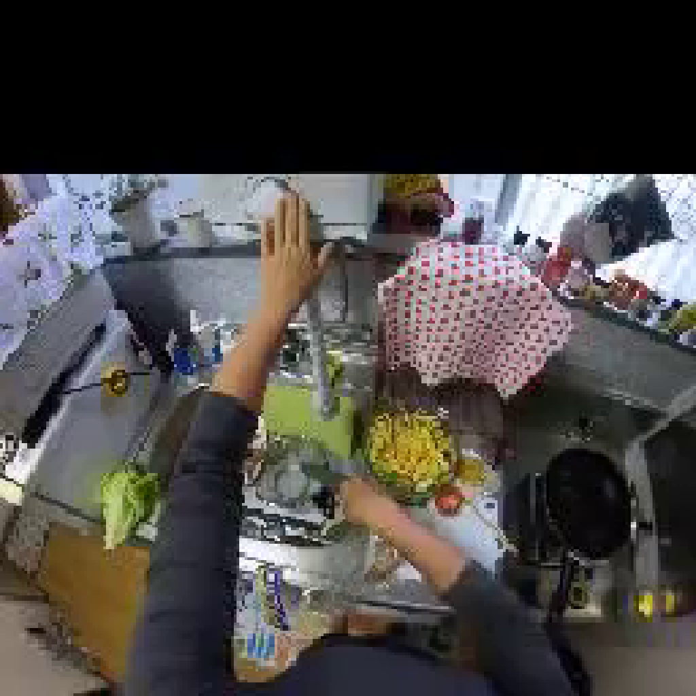
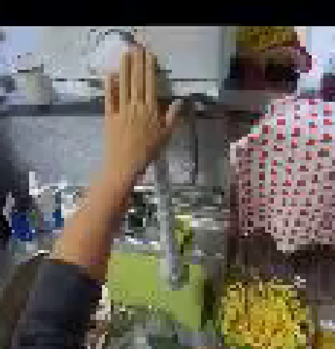
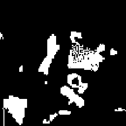
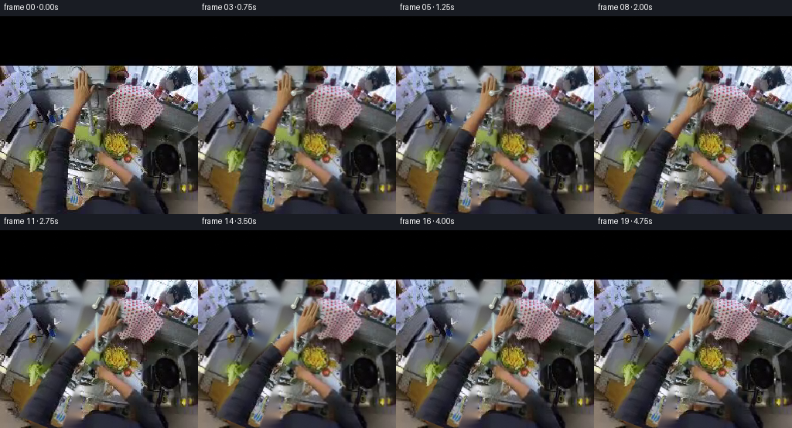
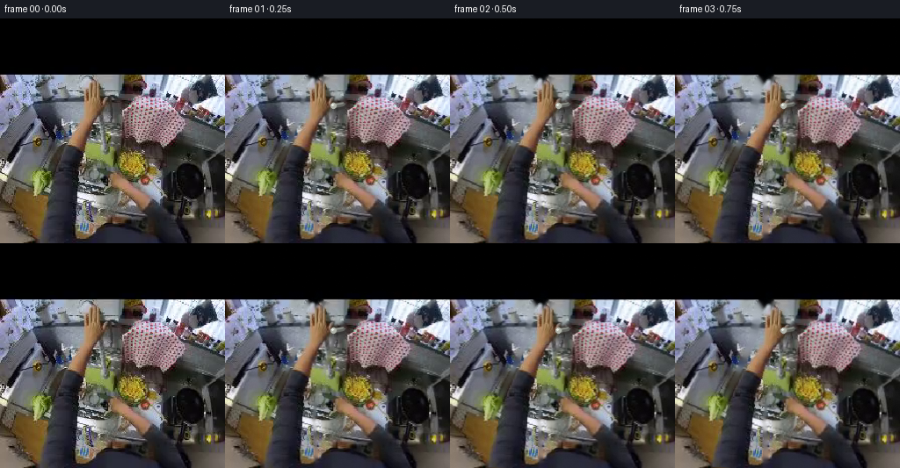
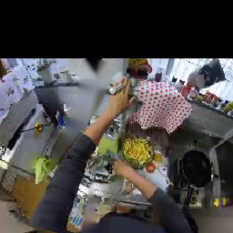
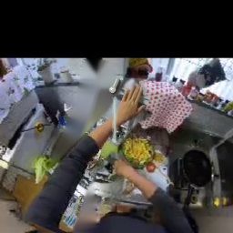
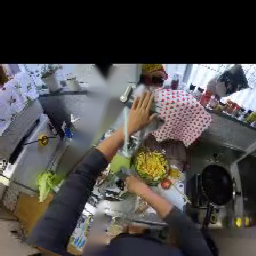
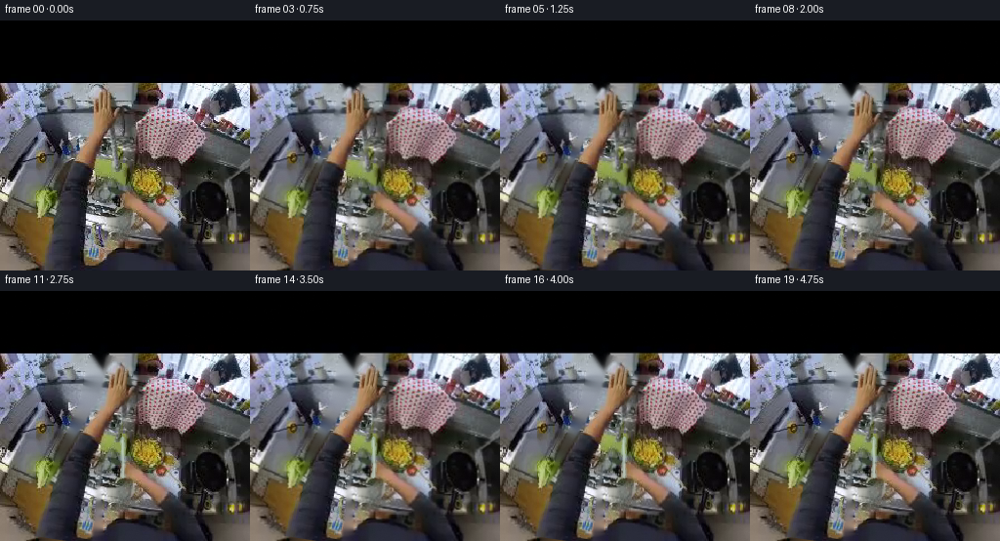
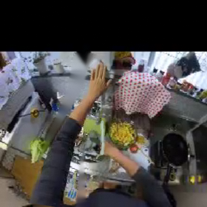

CODING AGENTS AS PIXEL WORLD MODELS
traex/GPT-5.6-Sol · common50_0025
点击播放 · 原生 RGB 像素
逐轮保存的候选
回放视频、检查图与代码变化。
每份候选均可单独播放。实际图片检查记录在下方工具轨迹中。
候选 01播放与检查图
点击播放 · 原生 RGB 像素

展开代码变化
--- 上一保存版本
+++ 本次保存版本
@@ -0,0 +1,157 @@
+from pathlib import Path
+import numpy as np
+from PIL import Image
+import cv2
+import artifact_io
+
+CASE = Path(__file__).resolve().parent
+W = H = 256
+
+
+def smoothstep(x):
+ x = np.clip(x, 0.0, 1.0)
+ return x*x*(3.0-2.0*x)
+
+
+def warp_piece(src, mask, angle_deg, pivot, shift=(0, 0)):
+ """Rotate a premultiplied image/mask around a scene-space pivot."""
+ M = cv2.getRotationMatrix2D(pivot, angle_deg, 1.0)
+ M[:, 2] += shift
+ rgba = np.dstack((src, mask)).astype(np.float32)
+ premul = rgba[:, :, :3] * (rgba[:, :, 3:4] / 255.0)
+ premul = cv2.warpAffine(premul, M, (W, H), flags=cv2.INTER_LINEAR,
+ borderMode=cv2.BORDER_CONSTANT, borderValue=0)
+ a = cv2.warpAffine(mask, M, (W, H), flags=cv2.INTER_LINEAR,
+ borderMode=cv2.BORDER_CONSTANT, borderValue=0)
+ rgb = np.where(a[:, :, None] > 1, premul * 255.0 / np.maximum(a[:, :, None], 1), 0)
+ return np.clip(rgb, 0, 255).astype(np.uint8), a.astype(np.uint8)
+
+
+def alpha_over(dst, src, alpha):
+ a = alpha.astype(np.float32)[:, :, None] / 255.0
+ return np.clip(src.astype(np.float32)*a + dst.astype(np.float32)*(1-a), 0, 255).astype(np.uint8)
+
+
+def line_mask(points, thickness):
+ m = np.zeros((H, W), np.uint8)
+ cv2.polylines(m, [np.asarray(points, np.int32)], False, 255, thickness,
+ lineType=cv2.LINE_AA)
+ return m
+
+
+def main():
+ base = np.asarray(Image.open(CASE / 'first_frame.png').convert('RGB'), dtype=np.uint8)
+
+ # A localized, feathered cutout of the raised right arm and hand. The broad
+ # silhouette is deliberate: it keeps the original hand texture and fingers,
+ # which look much more photographic than a newly drawn hand at this resolution.
+ right = np.zeros((H, W), np.uint8)
+ poly = np.array([
+ [44,256],[45,229],[51,200],[61,171],[73,145],[82,124],
+ [87,110],[90,93],[93,74],[97,67],[100,68],[101,83],
+ [104,68],[108,67],[109,84],[112,70],[116,71],[116,88],
+ [119,78],[123,80],[122,95],[128,91],[132,94],[128,103],
+ [121,108],[117,121],[112,137],[105,154],[101,174],
+ [98,198],[100,226],[102,256]
+ ], np.int32)
+ cv2.fillPoly(right, [poly], 255, lineType=cv2.LINE_AA)
+ # Preserve the black sleeve as part of the limb while softly blending edges.
+ right = cv2.GaussianBlur(right, (0,0), 1.15)
+
+ # Estimate a plausible background behind the old arm by inpainting only its
+ # silhouette. The moved arm will cover most of this area; inpaint prevents a
+ # conspicuous duplicate arm during the short reach toward the tap.
+ hole = cv2.dilate((right > 20).astype(np.uint8)*255, np.ones((5,5),np.uint8), iterations=1)
+ bg = cv2.inpaint(cv2.cvtColor(base, cv2.COLOR_RGB2BGR), hole, 7, cv2.INPAINT_TELEA)
+ bg = cv2.cvtColor(bg, cv2.COLOR_BGR2RGB)
+
+ frames = []
+ # Faucet control is around (124,99), directly under the raised fingertips.
+ # Water falls into the green basin from the short central spout.
+ for i in range(20):
+ if i == 0:
+ frames.append(base.copy())
+ continue
+
+ t = i / 19.0
+ reach = smoothstep(t / 0.42) # hand reaches and grips
+ turn = smoothstep((t - 0.28) / 0.36) # wrist twists handle
+ settle = smoothstep((t - 0.70) / 0.30)
+
+ # Tiny head/body sway makes the fixed kitchen feel like egocentric video.
+ dx = 0.55*np.sin(i*0.46) + 0.45*reach
+ dy = 0.35*np.sin(i*0.31)
+ Mbg = np.float32([[1,0,dx],[0,1,dy]])
+ fr = cv2.warpAffine(bg, Mbg, (W,H), flags=cv2.INTER_LINEAR,
+ borderMode=cv2.BORDER_REFLECT)
+
+ # Right hand pivots at the lower arm: clockwise curl around the small silver
+ # faucet control, then holds it in the ON position.
+ ang = -11.0*reach - 12.0*turn + 2.0*settle
+ sh = (4.2*reach + 1.0*turn, 2.5*reach)
+ hand, hm = warp_piece(base, right, ang, (78,180), sh)
+ fr = alpha_over(fr, hand, hm)
+
+ # Reinforce the silver control/handle. It rotates underneath the gripping
+ # fingers; metallic highlights change with angle, making the action legible.
+ cx = int(123 + dx); cy = int(99 + dy)
+ ha = np.deg2rad(-8 - 53*turn)
+ length = 12
+ ex = int(cx + length*np.cos(ha)); ey = int(cy + length*np.sin(ha))
+ shadow = line_mask([(cx+1,cy+2),(ex+1,ey+2)], 5)
+ metal = line_mask([(cx,cy),(ex,ey)], 4)
+ hi = line_mask([(cx,cy-1),(ex,ey-1)], 1)
+ # The control should emerge gradually as fingers turn it.
+ ctl_a = np.uint8(np.clip(115 + 105*turn,0,255))
+ fr = alpha_over(fr, np.full_like(fr,(42,44,42)), shadow*(ctl_a/255.0))
+ fr = alpha_over(fr, np.full_like(fr,(156,164,156)), metal*(ctl_a/255.0))
+ fr = alpha_over(fr, np.full_like(fr,(226,232,221)), hi*(ctl_a/255.0))
+ cv2.circle(fr, (cx,cy), 3, (177,181,171), -1, lineType=cv2.LINE_AA)
+ cv2.circle(fr, (cx-1,cy-1), 1, (235,238,228), -1, lineType=cv2.LINE_AA)
+
+ # Water starts just after the handle begins turning. Multiple translucent
+ # strands, highlights and basin ripples read as running tap water without
+ # hiding the original sink contents.
+ flow = smoothstep((t - 0.36) / 0.24)
+ if flow > 0:
+ water_layer = fr.copy()
+ wm = np.zeros((H,W),np.uint8)
+ # Short spout mouth and stream: center of sink, down into green basin.
+ sx = int(126 + dx); sy = int(108 + dy)
+ endy = int(156 + dy)
+ for k,(off,wid,val) in enumerate([(-2,1,100),(0,2,170),(2,1,90)]):
+ pts=[]
+ for yy in range(sy, endy+1, 2):
+ wave = 0.7*np.sin(yy*0.36 + i*1.7 + k)
+ pts.append((int(sx+off+wave),yy))
+ cv2.polylines(wm,[np.array(pts,np.int32)],False,int(val*flow),wid,cv2.LINE_AA)
+ # Bright center and cool blue-gray edge are consistent with reflections.
+ cool = np.zeros_like(fr); cool[:]=(178,202,194)
+ fr = alpha_over(fr,cool,wm)
+ shine = np.zeros((H,W),np.uint8)
+ cv2.line(shine,(sx-1,sy+2),(sx,endy-1),int(92*flow),1,cv2.LINE_AA)
+ fr = alpha_over(fr,np.full_like(fr,(238,244,226)),shine)
+
+ # Animated elliptical impact ripples around (126,158).
+ ripple = np.zeros((H,W),np.uint8)
+ for j in range(3):
+ phase = (i*3.1 + j*9) % 25
+ rr = 3 + phase*0.48
+ a = int((70*(1-phase/28))*flow)
+ cv2.ellipse(ripple,(126,int(158+dy)),(int(rr),max(1,int(rr*.28))),0,195,345,a,1,cv2.LINE_AA)
+ fr = alpha_over(fr,np.full_like(fr,(207,222,190)),ripple)
+
+ # Mild exposure adaptation as the shiny tap is opened, plus sensor grain.
+ gain = 1.0 + 0.009*flow
+ fr = np.clip(fr.astype(np.float32)*gain,0,255)
+ rng = np.random.default_rng(7100+i)
+ noise = rng.normal(0, 0.48, fr.shape[:2])[:,:,None]
+ fr = np.clip(fr + noise,0,255).astype(np.uint8)
+ frames.append(fr)
+
+ arr = np.stack(frames).astype(np.uint8)
+ arr[0] = base # contract: exact first frame
+ artifact_io.save(arr, CASE)
+
+if __name__ == '__main__':
+ main()
候选 02播放与检查图
点击播放 · 原生 RGB 像素

展开代码变化
--- 上一保存版本
+++ 本次保存版本
@@ -85,29 +85,30 @@
fr = cv2.warpAffine(bg, Mbg, (W,H), flags=cv2.INTER_LINEAR,
borderMode=cv2.BORDER_REFLECT)
- # Right hand pivots at the lower arm: clockwise curl around the small silver
- # faucet control, then holds it in the ON position.
- ang = -11.0*reach - 12.0*turn + 2.0*settle
- sh = (4.2*reach + 1.0*turn, 2.5*reach)
- hand, hm = warp_piece(base, right, ang, (78,180), sh)
- fr = alpha_over(fr, hand, hm)
-
- # Reinforce the silver control/handle. It rotates underneath the gripping
- # fingers; metallic highlights change with angle, making the action legible.
- cx = int(123 + dx); cy = int(99 + dy)
- ha = np.deg2rad(-8 - 53*turn)
- length = 12
+ # Reinforce the real control at the left shoulder of the tap. It rotates
+ # *under* the hand, so only its exposed silver end remains visible.
+ cx = int(119 + dx); cy = int(117 + dy)
+ ha = np.deg2rad(174 - 68*turn)
+ length = 9
ex = int(cx + length*np.cos(ha)); ey = int(cy + length*np.sin(ha))
shadow = line_mask([(cx+1,cy+2),(ex+1,ey+2)], 5)
metal = line_mask([(cx,cy),(ex,ey)], 4)
hi = line_mask([(cx,cy-1),(ex,ey-1)], 1)
# The control should emerge gradually as fingers turn it.
- ctl_a = np.uint8(np.clip(115 + 105*turn,0,255))
+ ctl_a = np.uint8(np.clip(80 + 95*turn,0,255))
fr = alpha_over(fr, np.full_like(fr,(42,44,42)), shadow*(ctl_a/255.0))
fr = alpha_over(fr, np.full_like(fr,(156,164,156)), metal*(ctl_a/255.0))
fr = alpha_over(fr, np.full_like(fr,(226,232,221)), hi*(ctl_a/255.0))
cv2.circle(fr, (cx,cy), 3, (177,181,171), -1, lineType=cv2.LINE_AA)
cv2.circle(fr, (cx-1,cy-1), 1, (235,238,228), -1, lineType=cv2.LINE_AA)
+
+ # The arm makes a modest clockwise reach/twist and remains on the tap. A
+ # large swing would incorrectly make the fingertips appear to touch the
+ # checked cloth to the right.
+ ang = -4.2*reach - 4.8*turn + 1.0*settle
+ sh = (1.8*reach + 0.5*turn, 1.0*reach)
+ hand, hm = warp_piece(base, right, ang, (78,180), sh)
+ fr = alpha_over(fr, hand, hm)
# Water starts just after the handle begins turning. Multiple translucent
# strands, highlights and basin ripples read as running tap water without
@@ -116,9 +117,9 @@
if flow > 0:
water_layer = fr.copy()
wm = np.zeros((H,W),np.uint8)
- # Short spout mouth and stream: center of sink, down into green basin.
- sx = int(126 + dx); sy = int(108 + dy)
- endy = int(156 + dy)
+ # Water emerges below the long central spout and falls into the sink.
+ sx = int(127 + dx); sy = int(151 + dy)
+ endy = int(191 + dy)
for k,(off,wid,val) in enumerate([(-2,1,100),(0,2,170),(2,1,90)]):
pts=[]
for yy in range(sy, endy+1, 2):
@@ -132,13 +133,13 @@
cv2.line(shine,(sx-1,sy+2),(sx,endy-1),int(92*flow),1,cv2.LINE_AA)
fr = alpha_over(fr,np.full_like(fr,(238,244,226)),shine)
- # Animated elliptical impact ripples around (126,158).
+ # Animated elliptical impact ripples at the sink/hand impact point.
ripple = np.zeros((H,W),np.uint8)
for j in range(3):
phase = (i*3.1 + j*9) % 25
rr = 3 + phase*0.48
a = int((70*(1-phase/28))*flow)
- cv2.ellipse(ripple,(126,int(158+dy)),(int(rr),max(1,int(rr*.28))),0,195,345,a,1,cv2.LINE_AA)
+ cv2.ellipse(ripple,(127,int(192+dy)),(int(rr),max(1,int(rr*.28))),0,195,345,a,1,cv2.LINE_AA)
fr = alpha_over(fr,np.full_like(fr,(207,222,190)),ripple)
# Mild exposure adaptation as the shiny tap is opened, plus sensor grain.
可观测工具轨迹
实际执行的命令与返回图片。
命令 1exit 0
/bin/bash -lc "cat prompt.txt && printf '\\n---RULES---\\n' && cat GENERATION_RULES.md"
命令 2exit 0
/bin/bash -lc "find . -maxdepth 2 -type f -printf '%p\\n' | sort"
命令 3exit 0
/bin/bash -lc "python3 - <<'PY'
from PIL import Image
im=Image.open('first_frame.png')
im.resize((1024,1024),Image.Resampling.NEAREST).save('.tmp/up.png')
print(im.mode, im.size)
PY"命令 4exit 0
/bin/bash -lc "python3 - <<'PY'
from PIL import Image
im=Image.open('first_frame.png')
for name,box in [('center',(60,55,175,175)),('top',(60,55,150,125)),('sink',(80,90,175,180))]:
im.crop(box).resize(((box[2]-box[0])*6,(box[3]-box[1])*6),Image.Resampling.NEAREST).save('.tmp/'+name+'.png')
PY"命令 5exit 0
/bin/bash -lc "cat task_spec.json && sed -n '1,240p' artifact_io.py"
命令 6exit 0
/bin/bash -lc "python3 - <<'PY'
try:
import cv2; print('cv2',cv2.__version__)
except Exception as e: print(e)
try:
import scipy; print('scipy',scipy.__version__)
except Exception as e: print(e)
PY"命令 7exit 0
/bin/bash -lc "python3 - <<'PY'
from PIL import Image
import numpy as np, cv2
im=np.array(Image.open('first_frame.png'))
y=cv2.cvtColor(im,cv2.COLOR_RGB2YCrCb)
for p in [(105,90),(106,110),(93,135),(80,175),(125,100),(130,150),(150,190),(110,75)]:
x,y0=p; print(p, im[y0,x], y[y0,x])
PY"命令 8exit 2
/bin/bash -lc "cat > /tmp/masktest.py <<'PY'
from PIL import Image,ImageDraw,ImageFilter
import numpy as np,cv2
im=np.array(Image.open('first_frame.png'))
hsv=cv2.cvtColor(im,cv2.COLOR_RGB2HSV); yy=cv2.cvtColor(im,cv2.COLOR_RGB2YCrCb)
# skin candidates broadly
m=((yy[:,:,1]>136)&(yy[:,:,1]<180)&(yy[:,:,2]>75)&(yy[:,:,2]<135)&(im.max(2)-im.min(2)>18)).astype(np.uint8)*255
num,l,stats,c=cv2.connectedComponentsWithStats(m)
out=np.zeros_like(m)
for i in range(1,num):
if stats[i,4]>20: out[l==i]=255
Image.fromarray(m).save('.tmp/skinraw.png'); Image.fromarray(out).save('.tmp/skincc.png')
print(sorted(stats[1:,4],reverse=True)[:20])
PY
python3 /tmp/masktest.py"命令 9exit 0
/bin/bash -lc "cat > .tmp/masktest.py <<'PY'
from PIL import Image
import numpy as np,cv2
im=np.array(Image.open('first_frame.png'))
y= cv2.cvtColor(im,cv2.COLOR_RGB2YCrCb)
m=((y[:,:,1]>136)&(y[:,:,1]<180)&(y[:,:,2]>75)&(y[:,:,2]<135)&(im.max(2)-im.min(2)>18)).astype(np.uint8)*255
num,l,stats,c=cv2.connectedComponentsWithStats(m)
out=np.zeros_like(m)
for i in range(1,num):
if stats[i,4]>20: out[l==i]=255
Image.fromarray(m).save('.tmp/skinraw.png'); Image.fromarray(out).save('.tmp/skincc.png')
print(sorted(stats[1:,4],reverse=True)[:20])
PY
python3 .tmp/masktest.py"命令 10exit 0
/bin/bash -lc "cat > generate.py <<'PY'
from pathlib import Path
import numpy as np
from PIL import Image
import cv2
import artifact_io
CASE = Path(__file__).resolve().parent
W = H = 256
def smoothstep(x):
x = np.clip(x, 0.0, 1.0)
return x*x*(3.0-2.0*x)
def warp_piece(src, mask, angle_deg, pivot, shift=(0, 0)):
\"\"\"Rotate a premultiplied image/mask around a scene-space pivot.\"\"\"
M = cv2.getRotationMatrix2D(pivot, angle_deg, 1.0)
M[:, 2] += shift
rgba = np.dstack((src, mask)).astype(np.float32)
premul = rgba[:, :, :3] * (rgba[:, :, 3:4] / 255.0)
premul = cv2.warpAffine(premul, M, (W, H), flags=cv2.INTER_LINEAR,
borderMode=cv2.BORDER_CONSTANT, borderValue=0)
a = cv2.warpAffine(mask, M, (W, H), flags=cv2.INTER_LINEAR,
borderMode=cv2.BORDER_CONSTANT, borderValue=0)
rgb = np.where(a[:, :, None] > 1, premul * 255.0 / np.maximum(a[:, :, None], 1), 0)
return np.clip(rgb, 0, 255).astype(np.uint8), a.astype(np.uint8)
def alpha_over(dst, src, alpha):
a = alpha.astype(np.float32)[:, :, None] / 255.0
return np.clip(src.astype(np.float32)*a + dst.astype(np.float32)*(1-a), 0, 255).astype(np.uint8)
def line_mask(points, thickness):
m = np.zeros((H, W), np.uint8)
cv2.polylines(m, [np.asarray(points, np.int32)], False, 255, thickness,
lineType=cv2.LINE_AA)
return m
def main():
base = np.asarray(Image.open(CASE / 'first_frame.png').convert('RGB'), dtype=np.uint8)
# A localized, feathered cutout of the raised right arm and hand. The broad
# silhouette is deliberate: it keeps the original hand texture and fingers,
# which look much more photographic than a newly drawn hand at this resolution.
right = np.zeros((H, W), np.uint8)
poly = np.array([
[44,256],[45,229],[51,200],[61,171],[73,145],[82,124],
[87,110],[90,93],[93,74],[97,67],[100,68],[101,83],
[104,68],[108,67],[109,84],[112,70],[116,71],[116,88],
[119,78],[123,80],[122,95],[128,91],[132,94],[128,103],
[121,108],[117,121],[112,137],[105,154],[101,174],
[98,198],[100,226],[102,256]
], np.int32)
cv2.fillPoly(right, [poly], 255, lineType=cv2.LINE_AA)
# Preserve the black sleeve as part of the limb while softly blending edges.
right = cv2.GaussianBlur(right, (0,0), 1.15)
# Estimate a plausible background behind the old arm by inpainting only its
# silhouette. The moved arm will cover most of this area; inpaint prevents a
# conspicuous duplicate arm during the short reach toward the tap.
hole = cv2.dilate((right > 20).astype(np.uint8)*255, np.ones((5,5),np.uint8), iterations=1)
bg = cv2.inpaint(cv2.cvtColor(base, cv2.COLOR_RGB2BGR), hole, 7, cv2.INPAINT_TELEA)
bg = cv2.cvtColor(bg, cv2.COLOR_BGR2RGB)
frames = []
# Faucet control is around (124,99), directly under the raised fingertips.
# Water falls into the green basin from the short central spout.
for i in range(20):
if i == 0:
frames.append(base.copy())
continue
t = i / 19.0
reach = smoothstep(t / 0.42) # hand reaches and grips
turn = smoothstep((t - 0.28) / 0.36) # wrist twists handle
settle = smoothstep((t - 0.70) / 0.30)
# Tiny head/body sway makes the fixed kitchen feel like egocentric video.
dx = 0.55*np.sin(i*0.46) + 0.45*reach
dy = 0.35*np.sin(i*0.31)
Mbg = np.float32([[1,0,dx],[0,1,dy]])
fr = cv2.warpAffine(bg, Mbg, (W,H), flags=cv2.INTER_LINEAR,
borderMode=cv2.BORDER_REFLECT)
# Right hand pivots at the lower arm: clockwise curl around the small silver
# faucet control, then holds it in the ON position.
ang = -11.0*reach - 12.0*turn + 2.0*settle
sh = (4.2*reach + 1.0*turn, 2.5*reach)
hand, hm = warp_piece(base, right, ang, (78,180), sh)
fr = alpha_over(fr, hand, hm)
# Reinforce the silver control/handle. It rotates underneath the gripping
# fingers; metallic highlights change with angle, making the action legible.
cx = int(123 + dx); cy = int(99 + dy)
ha = np.deg2rad(-8 - 53*turn)
length = 12
ex = int(cx + length*np.cos(ha)); ey = int(cy + length*np.sin(ha))
shadow = line_mask([(cx+1,cy+2),(ex+1,ey+2)], 5)
metal = line_mask([(cx,cy),(ex,ey)], 4)
hi = line_mask([(cx,cy-1),(ex,ey-1)], 1)
# The control should emerge gradually as fingers turn it.
ctl_a = np.uint8(np.clip(115 + 105*turn,0,255))
fr = alpha_over(fr, np.full_like(fr,(42,44,42)), shadow*(ctl_a/255.0))
fr = alpha_over(fr, np.full_like(fr,(156,164,156)), metal*(ctl_a/255.0))
fr = alpha_over(fr, np.full_like(fr,(226,232,221)), hi*(ctl_a/255.0))
cv2.circle(fr, (cx,cy), 3, (177,181,171), -1, lineType=cv2.LINE_AA)
cv2.circle(fr, (cx-1,cy-1), 1, (235,238,228), -1, lineType=cv2.LINE_AA)
# Water starts just after the handle begins turning. Multiple translucent
# strands, highlights and basin ripples read as running tap water without
# hiding the original sink contents.
flow = smoothstep((t - 0.36) / 0.24)
if flow > 0:
water_layer = fr.copy()
wm = np.zeros((H,W),np.uint8)
# Short spout mouth and stream: center of sink, down into green basin.
sx = int(126 + dx); sy = int(108 + dy)
endy = int(156 + dy)
for k,(off,wid,val) in enumerate([(-2,1,100),(0,2,170),(2,1,90)]):
pts=[]
for yy in range(sy, endy+1, 2):
wave = 0.7*np.sin(yy*0.36 + i*1.7 + k)
pts.append((int(sx+off+wave),yy))
cv2.polylines(wm,[np.array(pts,np.int32)],False,int(val*flow),wid,cv2.LINE_AA)
# Bright center and cool blue-gray edge are consistent with reflections.
cool = np.zeros_like(fr); cool[:]=(178,202,194)
fr = alpha_over(fr,cool,wm)
shine = np.zeros((H,W),np.uint8)
cv2.line(shine,(sx-1,sy+2),(sx,endy-1),int(92*flow),1,cv2.LINE_AA)
fr = alpha_over(fr,np.full_like(fr,(238,244,226)),shine)
# Animated elliptical impact ripples around (126,158).
ripple = np.zeros((H,W),np.uint8)
for j in range(3):
phase = (i*3.1 + j*9) % 25
rr = 3 + phase*0.48
a = int((70*(1-phase/28))*flow)
cv2.ellipse(ripple,(126,int(158+dy)),(int(rr),max(1,int(rr*.28))),0,195,345,a,1,cv2.LINE_AA)
fr = alpha_over(fr,np.full_like(fr,(207,222,190)),ripple)
# Mild exposure adaptation as the shiny tap is opened, plus sensor grain.
gain = 1.0 + 0.009*flow
fr = np.clip(fr.astype(np.float32)*gain,0,255)
rng = np.random.default_rng(7100+i)
noise = rng.normal(0, 0.48, fr.shape[:2])[:,:,None]
fr = np.clip(fr + noise,0,255).astype(np.uint8)
frames.append(fr)
arr = np.stack(frames).astype(np.uint8)
arr[0] = base # contract: exact first frame
artifact_io.save(arr, CASE)
if __name__ == '__main__':
main()
PY
python3 generate.py"命令 11exit 0
/bin/bash -lc "python3 - <<'PY'
from PIL import Image
im=Image.open('first_frame.png')
im.crop((100,90,150,190)).resize((500,1000),Image.Resampling.LANCZOS).save('.tmp/faucet.png')
PY"命令 12exit 0
/bin/bash -lc "python3 generate.py && python3 - <<'PY'
from pathlib import Path
from PIL import Image
import numpy as np
p=Path('.')
a=np.array(Image.open('frames/00.png')); b=np.array(Image.open('first_frame.png'))
print('first_exact=',np.array_equal(a,b),'frames=',len(list((p/'frames').glob('*.png'))),'shape=',a.shape,'dtype=',a.dtype)
PY"视觉工具实际返回图片 1

视觉工具实际返回图片 2

视觉工具实际返回图片 3

视觉工具实际返回图片 4
视觉工具实际返回图片 5
视觉工具实际返回图片 6

视觉工具实际返回图片 7

视觉工具实际返回图片 8

视觉工具实际返回图片 9

视觉工具实际返回图片 10

视觉工具实际返回图片 11

视觉工具实际返回图片 12
视觉工具实际返回图片 13

视觉工具实际返回图片 14

保存候选 2 份；完成命令 12 次；可验证图片返回 14 张。原始 API 响应与完整日志保留在本地。